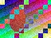
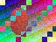
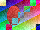
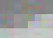

Baseline 4:2:0 at its own size; progressive, enlarged; grey; Adobe's CMYK; YCCK sampled 4:2:0, enlarged:
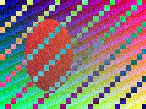
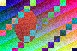
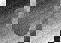
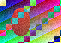
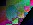
4:1:1 and 4:4:0, enlarged; a restart after every MCU; EXIF's half turn (3); its quarter turn (6), the turned size declared:
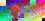
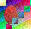
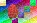
GIF: transparent over green, and a first frame offset on its canvas; interlaced; an animation at rest; a photograph in 256 colours:
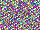
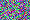
WebP lossy, lossless, with alpha over green, libvpx's; at rest, a WebP and a GIF animation, enlarged; arithmetic-coded and 12-bit JPEGs, which Chromium lays out and leaves empty:



